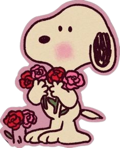
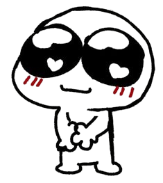
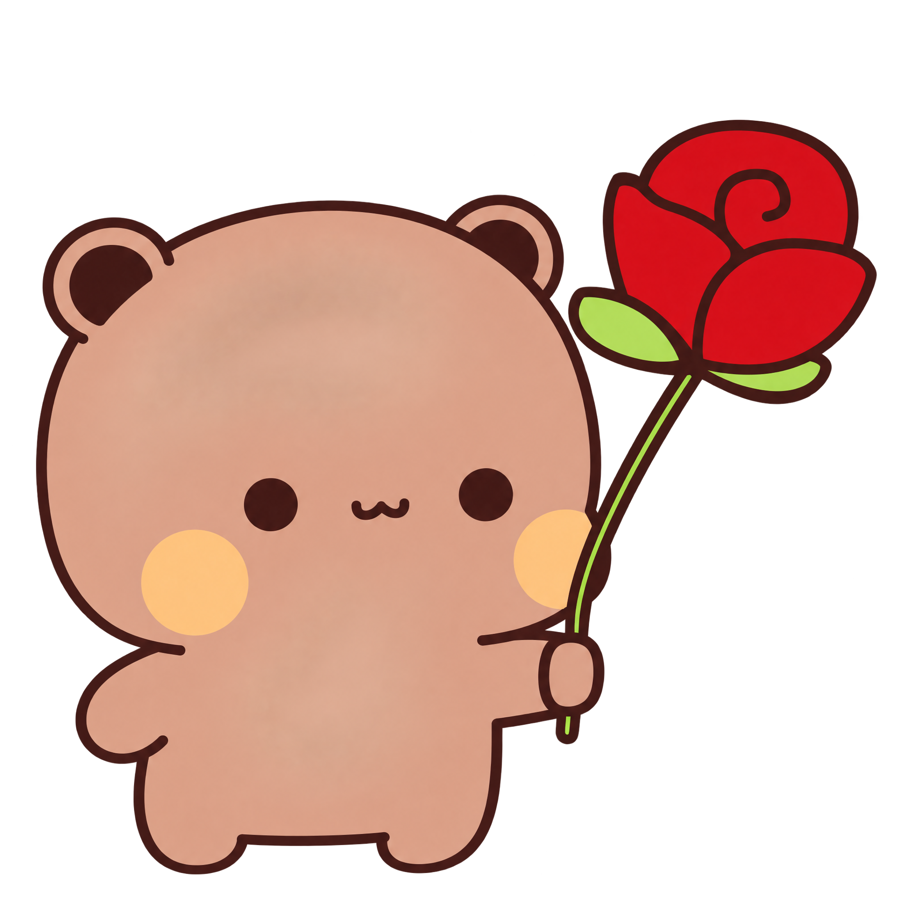
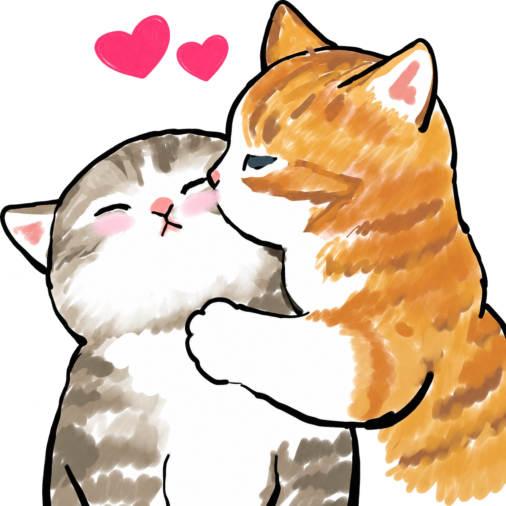

Um coração feito de carinho




Amo seus beijinhos. Amo seu sorriso. Amo seus abraços. Amo seus risos. Amo seus cachinhos. Amo tudo em você.




Amo seus beijinhos. Amo seu sorriso. Amo seus abraços. Amo seus risos. Amo seus cachinhos. Amo tudo em você.